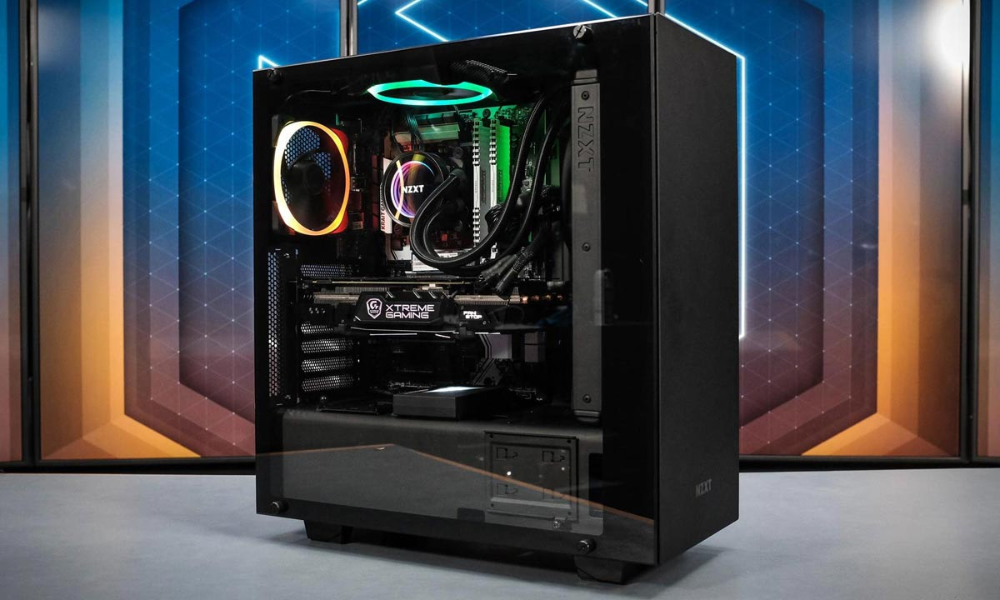

Mis aspiraciones y proyectos
Mi nombre es Eduardo Chavez Martin, soy un chico de 16 años que actualmente cursa la educacion media superior, y me va pues, decentemente, nada fuera de
lo comun, pero creo que puedo llegar muy lejos, lograr todo lo que quiero
e incluso mucho más, siempre me esfuerzo para ser mejor y mejorar en los
aspectos en los que estoy mal, siempre busco mejorar, puedo llegar a
hacer cosas muy grandes.
Meta a corto plazo
Una meta a corto plazo es armar mi computadora, pues desde hace
mucho quiero una computadora buena y potente, pues la mia no es muy buena y creo que necesitare algo mejor incluso para los siguientes semestres,
tengo conocimiento de todos los componentes, funcionamiento y ensamblaje de las computadoras, y he estado
ahorrando y comprando poco a poco todos los componentes, ahora con la beca puedo comprar unas cosas mas rapido y
espero en unos meses ya poder tener todos los componentes y poder ensamblar mi computadora
con la que podria hacer muchas cosas y me seria mas facil hacer trabajos escolares, y porque no? tambien para jugar ;).

Meta a mediano plazo
Actualmente estudio en el CECyT No.3 del Instituto Politecnico Nacional,
y por algo puse mi primera opcion aqui, una meta a mediano plazo es graduarme de aqui,
en alguna de las especialidades; Maquinas asistidas por computadora es una de las que me interesa,
pero mi meta es graduerme, con un promedio satisfactorio y con todo el conocimiento
que esta escuela me puede dar, para sobre todo, y la principal meta, entrar a la Superior del IPN,
y estudiar en la Unidad Profesional Interdisciplinaria en Ingeniería y Tecnologías Avanzadas(UPIITA)
ingenieria mecatronica, es una carrera que siempre me ha llamado la atencion y que me gusta
todo lo relacionado a ella, se que es de las mas demandadas, pero yo se que
puedo entrar sin problemas, estudiar ahi ahorita es lo que mas quiero, me interesa demasiado
y se que puedo hacer grandes cosas en esa carrera.

Mis aspiraciones
Yo aspiro primeramente a acabar mi carrera y titularme, actualmente quiero ser ingeniero mecatronico
porque creo que es una carrea con mucho potencial y tengo varias ideas en mente. Yo no estoy estudiando
para trabajar para alguien, haciendo el puesto que alguien más estaba haciendo, no quiero hacer eso,
desde pequeño me ha gustado emprender, con algo de dinero que tengo mu gusta
invertirlo en algo y que se haga el doble, no quiero estudiar para trabajar para alguien más,
quiero estudiar para hacer mi propia empresa, hacer lo que a mi me gusta, ejerciando una carrera que me gusta,
inovando en ese area y poder hacer las ideas que tengo en mente, tal vez
suene muy lejano todo esto, y que va a haber muchos obstaculos, pero si me esfuerzo yo se que puedo.
Mi proyecto
Mi proyecto que ahora estoy haciendo, o esta en proceso es el de una banda, pues desde pequeño se tocar
la trompeta, pues mi familia es de musicos y practicamente todos tocan algun instrumento,
y junto con mi hermano, el que de hecho estudia musica, unos primos y unos amigos de mi hermano
hicimos una pequeña banda, en la cual ibamos a tocar de vez en cuando a fiestas pequeñas por muy
poco dinero, practicamente solo por diversión, y notamos que a la gente le gustaba,
nos empezaban a pedir para más eventos y pues ahora el proyecto es
hacer una banda mejor, comprar equipo de audio, algunos otros instrumentos para poder hacerlo
mejor y mejorar la calidad, y poder tambien cobrar más y asi hacer una banda mas grande,
tal vez no verlo como un trabajo, pero si como un pasatiempo que incluso nos puede dejar dinero,
ese seria mi proyecto actualmente a corto plazo.
Glosario
Palabras interesantes
- Mecatronica
La ingeniería mecatrónica, o simplemente mecatrónica, es una rama multidisciplinar de la ingeniería dedicada al diseño unificado de sistemas mecánicos y eléctricos, con el uso combinado de la robótica y de la ingeniería electrónica, informática, de telecomunicaciones, de sistemas, de control y de producto.
GPU
Una unidad de procesamiento gráfico o GPU es un coprocesador dedicado al procesamiento de gráficos u operaciones de coma flotante, para aligerar la carga de trabajo del procesador central en aplicaciones como los videojuegos o aplicaciones 3D interactivas.
Empresa
Una empresa es una organización o institución dedicada a actividades o persecución de fines económicos o comerciales para satisfacer las necesidades de bienes o servicios de la sociedad.
Trompeta
La trompeta es un instrumento musical de viento, que pertenece a la familia de los instrumentos de viento metal o metales, fabricado en aleación de metal. El sonido se produce gracias a la vibración de los labios del intérprete en la parte denominada boquilla a partir de la columna del aire.
Electronica
La ingeniería electrónica es una rama de la ingeniería que se encarga de resolver problemas de la ingeniería tales como el control de procesos industriales y de sistemas electrónicos de potencia, instrumentación y control, así como la transformación de electricidad para el funcionamiento de diversos aparatos eléctricos.
Mecanica
La mecánica es la rama de la física que estudia y analiza el movimiento y reposo de los cuerpos, y su evolución en el tiempo, bajo la acción de fuerzas. Modernamente la mecánica incluye la evolución de sistemas físicos más generales que los cuerpos másicos.